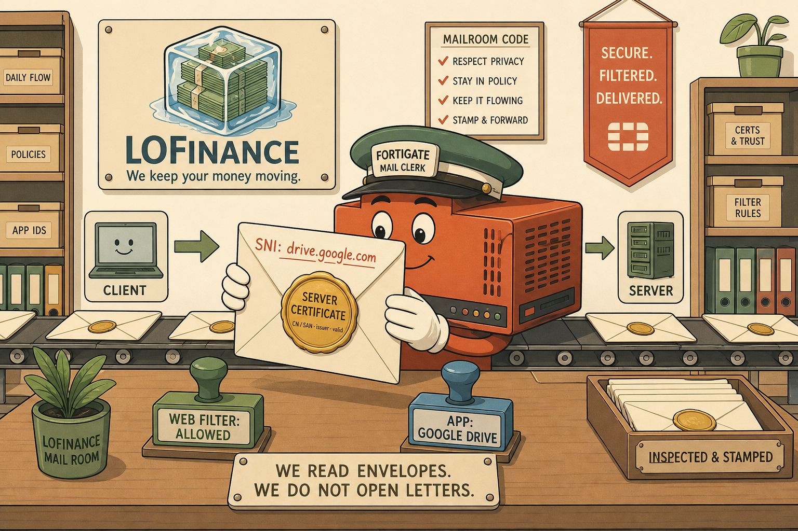
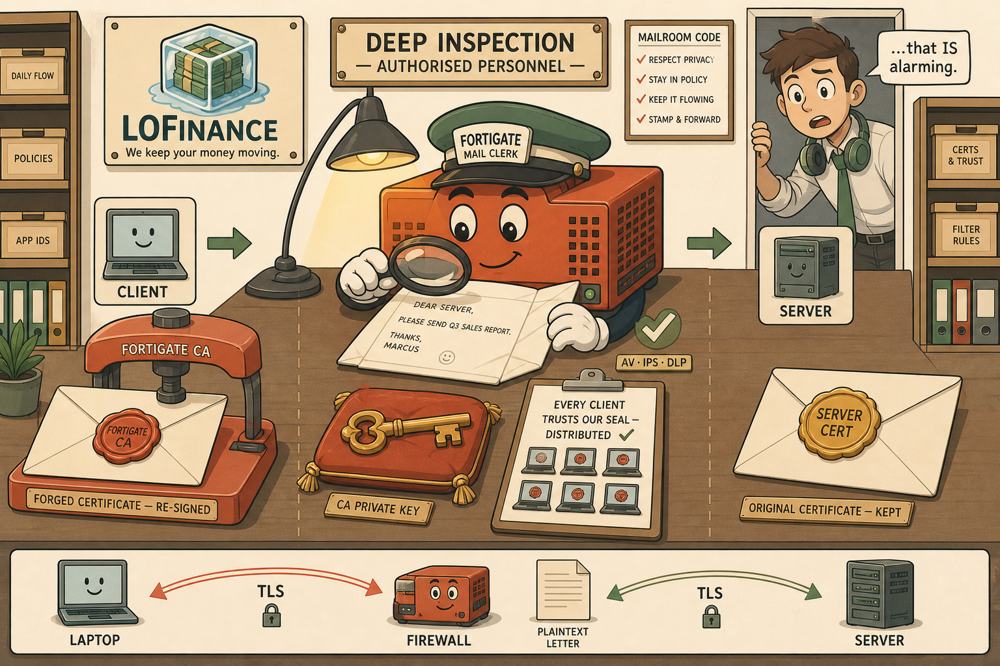
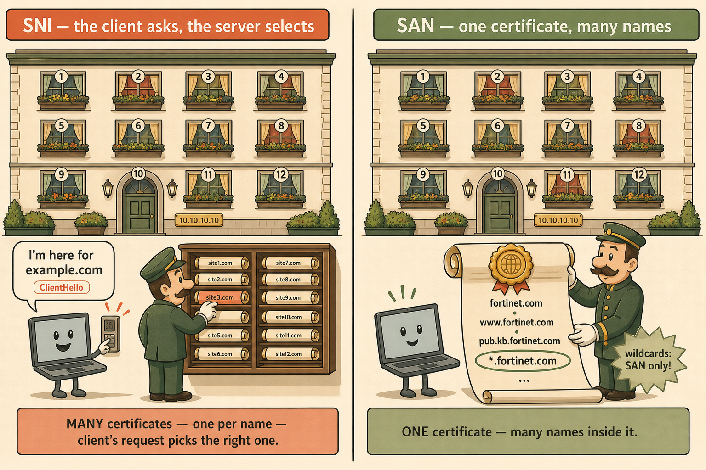
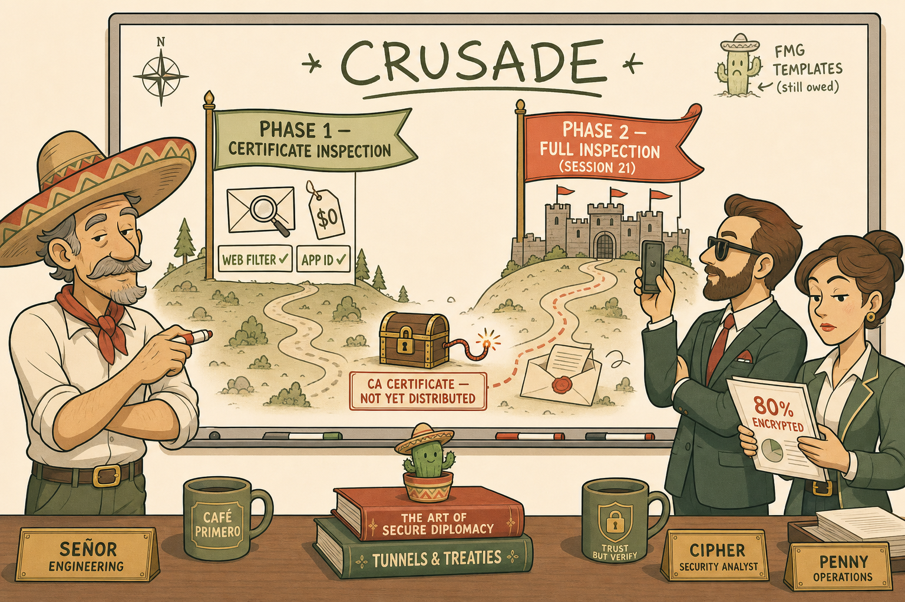

Recommended visual style: Real-World Analogy / Packet Journey hybrid. Today's session was built on a single sustained metaphor — the sealed envelope — and its power is that every technical fact maps onto one physical scene. A mail-room memory scene beats a topology diagram here: the concepts (envelope reading vs letter opening, the forger's desk, the two-solutions-to-one-address problem) are inherently physical. Four illustrations below build the complete scene.
Scene 1 — The Envelope Reader (Certificate Inspection)
What the FortiGate learns without opening anything: the destination written by the client (SNI) and the notarised seal from the server (certificate).

［ IMAGE PLACEHOLDER — 16:9 ］
The Envelope Reader
Anchors the core mental model: everything cert inspection can do comes from the outside of the envelope.
Image Generation Prompt
Flat minimalistic but highly detailed vector-art illustration, cream/warm off-white background, coral accents, muted gold highlights, sage greens, soft brown outlines, clean bold line work, no gradients, no photorealism, storybook-professional style. Scene: a warm, orderly corporate mail room inside LoFinance (the company logo — stacks of banknotes frozen inside an ice cube — on a wall plaque). At the center, a friendly anthropomorphised firewall appliance (boxy orange-red FortiGate-like device with simple cartoon eyes, wearing a postal clerk's visor) sits at a sorting desk holding a large SEALED cream envelope up to the light. It is clearly NOT opening it. On the envelope's front, two elements are prominently legible: (1) a handwritten address line labeled "SNI: drive.google.com" in coral ink, and (2) a large embossed gold wax seal labeled "SERVER CERTIFICATE" with tiny text "CN / SAN · issuer · valid". Beside the clerk, two rubber stamps sit ready: a green stamp "WEB FILTER: ALLOWED" and a blue stamp "APP: GOOGLE DRIVE". Behind the desk, a conveyor belt of identical sealed envelopes flows left (laptop icon, labeled CLIENT) to right (server rack icon, labeled SERVER) — the letters pass through unopened. A small sign on the desk reads "WE READ ENVELOPES. WE DO NOT OPEN LETTERS." Composition: eye-level, desk centered, conveyor crossing horizontally. Mood: calm, efficient, lightly whimsical. Must NOT appear: opened envelopes, scissors or letter openers, screens of code, photorealistic hardware, dark/ominous lighting. Learning purpose: viewer should recall that SNI and the server certificate are readable in plaintext and power web filtering + app identification without any decryption.
Accessibility: A cartoon firewall postal clerk examines the outside of a sealed envelope showing an SNI address and a certificate wax seal, while unopened mail flows past on a conveyor between a laptop and a server.
Scene 2 — The Authorised Forger's Desk (Full Inspection)
Full inspection splits one sealed conversation into two — and the forgery is only trusted because every employee was issued the forger's seal in advance.

［ IMAGE PLACEHOLDER — 16:9 ］
The Authorised Forger's Desk
Encodes the three load-bearing requirements the student derived: forgery, trust distribution, private key.
Image Generation Prompt
Flat minimalistic detailed vector-art illustration, cream background, coral/gold/sage palette, soft brown outlines, no gradients, no photorealism, consistent with the mail-room series. Scene: the same LoFinance mail room, now a back-office desk marked "DEEP INSPECTION — AUTHORISED PERSONNEL". The firewall postal clerk (same character: boxy orange-red device, cartoon eyes, postal visor) now wears white archivist gloves and has an OPENED letter flat on the desk under a warm lamp, reading it with a magnifying glass; a sage-green checkmark hovers over the letter ("AV · IPS · DLP" in tiny caption text beside it). The visual is split into two halves by the desk: LEFT half shows a fresh envelope being resealed with a NEW coral wax seal from a seal-press labeled "FORTIGATE CA", destined for a smiling laptop character; RIGHT half shows the original envelope's genuine gold seal ("SERVER CERT") kept with the server side. Three items are prominently arranged on the desk with small labels: (1) the coral seal-press "FORGED CERTIFICATE — RE-SIGNED", (2) an ornate brass key on a red cushion labeled "CA PRIVATE KEY", (3) a clipboard checklist titled "EVERY CLIENT TRUSTS OUR SEAL — DISTRIBUTED ✓" with rows of tiny laptop icons each bearing a small matching coral seal. A subtle diagram strip along the bottom: LAPTOP ←TLS→ FIREWALL ←TLS→ SERVER, two distinct arcs, plaintext letter icon between them. Junior (young man, slightly oversized headset around neck, wide alarmed eyes) peeks in from a doorway, one small speech bubble: "...that IS alarming." Mood: meticulous, quietly powerful, a touch conspiratorial but benign. Must NOT appear: sinister/hacker imagery, hoodies, skulls, dark palette. Learning purpose: recall the three requirements of full inspection and the two-session architecture.
Accessibility: The firewall clerk reads an opened letter at a secure desk; a seal press forges a new certificate for the client side, a brass CA private key rests on a cushion, and a checklist confirms every laptop trusts the seal. A worried junior engineer watches from the door.
Scene 3 — One Address, Twelve Names (SNI vs SAN)
Two solutions to the same apartment-building problem: a doorman who selects the right key when you name your host, or one master document listing every resident.

［ IMAGE PLACEHOLDER — 3:2 ］
The Apartment Building at 10.10.10.10
Fixes the count-based decode key that caused this session's one exam miss: "separate certs, one each = SNI; one cert, many names = SAN."
Image Generation Prompt
Flat minimalistic detailed vector-art illustration, cream background, coral/gold/sage palette, soft brown outlines, no gradients, storybook-professional, same series style. Scene: a charming twelve-window apartment building with a single front door and one brass address plate reading "10.10.10.10". The image is a clean side-by-side comparison split by a subtle vertical divider. LEFT PANEL, header banner "SNI — the client asks, the server selects": a visitor (small laptop character with legs) speaks into an intercom, speech bubble "I'm here for example.com" with a tiny tag "ClientHello"; a doorman character stands before a wall-mounted key cabinet containing TWELVE distinct labeled certificate-scrolls (site1.com … site12.com), reaching for exactly one, highlighted in coral. Caption strip: "MANY certificates — one per name — client's request picks the right one." RIGHT PANEL, header banner "SAN — one certificate, many names": the same visitor is simply handed ONE large gold-sealed scroll that unrolls to show a visible list: "fortinet.com · www.fortinet.com · pub.kb.fortinet.com · *.fortinet.com …", with the wildcard entry "*.fortinet.com" circled in sage green and a small starburst note "wildcards: SAN only!". Caption strip: "ONE certificate — many names inside it." Composition: symmetrical, panels equal width, building spanning the top of both. Mood: friendly, tidy, instructive. Must NOT appear: dense network diagrams, IP routing arrows, more than one building. Learning purpose: when an exam question counts certificates, the count decodes the answer — many certs/selection = SNI, one cert/many names = SAN.
Accessibility: Split scene at one apartment building: on the left a doorman picks one of twelve certificate scrolls after the visitor names their host (SNI); on the right the visitor receives a single scroll listing many names including a wildcard (SAN).
Scene 4 — The Crusade Map (Choosing the Weapon)
The business decision Penny approved: phase one free, phase two costed — and the loaded gun (undistributed CA) waiting for Session 21.

［ IMAGE PLACEHOLDER — 16:9 ］
The Crusade Map
Ties the technical content to the business decision and plants the deployment-order lesson (CA before enablement) as a visual cliffhanger.
Image Generation Prompt
Flat minimalistic detailed vector-art illustration, cream background, coral/gold/sage palette, soft brown outlines, no gradients, same character designs as series. Scene: the LoFinance war-room whiteboard wall, drawn like a lightly medieval campaign map with gentle humour. Señor (older engineer, magnificent wide sombrero, calm knowing half-smile, rolling a whiteboard marker across his knuckles) stands beside the board; Cipher (sharp-dressed security analyst, arms folded, restrained satisfaction, phone raised having just photographed the board); Penny (operations chief, professional blazer, holding a printed report stamped "80% ENCRYPTED", one eyebrow raised) reviews it. The whiteboard map shows a road with two campaign banners: FIRST BANNER, sage green, planted at a small hill labeled "PHASE 1 — CERTIFICATE INSPECTION", with tiny icons: an envelope being read, a price tag reading "$0", stamps "WEB FILTER ✓ APP ID ✓". SECOND BANNER, coral, further along the road at a fortress labeled "PHASE 2 — FULL INSPECTION (SESSION 21)", with icons: an opened letter, a wax seal press, a price tag with a question mark. Between the two, prominently, a small locked chest labeled "CA CERTIFICATE — NOT YET DISTRIBUTED" with a lit fuse-like ribbon subtly trailing toward the Phase 2 fortress — the visual loaded gun. The single word "CRUSADE" is written large at the top of the board in marker style, with a tiny sad cactus doodle in the corner labeled "FMG TEMPLATES (still owed)". Mood: wry, strategic, anticipatory. Must NOT appear: actual weapons, violence, dark tones, real vendor logos. Learning purpose: recall the phased rollout, that phase 1 is essentially free, and that the undistributed CA is the fault that detonates next session.
Accessibility: Señor, Cipher, and Penny stand at a whiteboard campaign map showing a free Phase 1 (certificate inspection) and a costed Phase 2 fortress (full inspection), with an undistributed CA certificate chest and a lit fuse hinting at next session's incident.